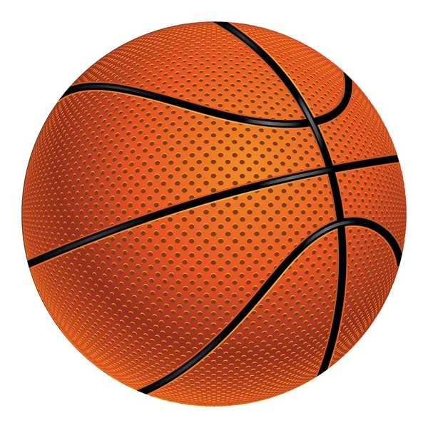
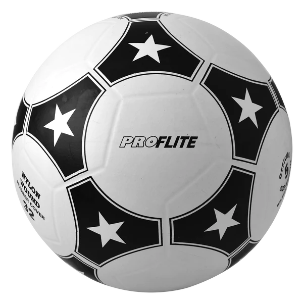
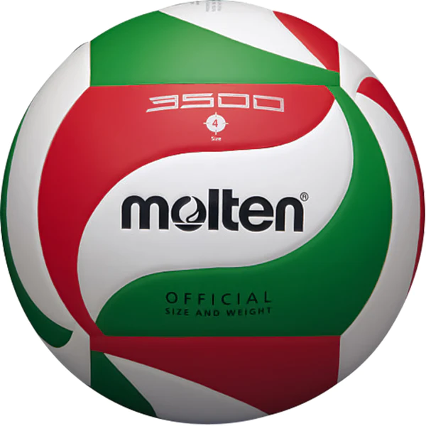
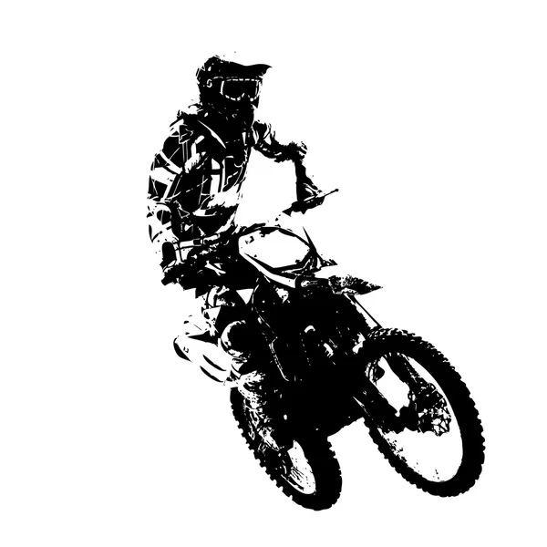

DEPORTES
Aqui puedes encontrar todo lo que buscas acerca de deportes, noticias y accesorios. Explora nuestra diversa pagina.
Para nosotros el deporte no es un simple entretenimiento, es una forma de vida saludable. Practicalos siempre

Basquetbol
Uno de los deportes favoritos de muchos, que se trata de encestar un balo dentro de un aro, tratando de buscar la mayor cantidad de canastas.

Futbol
El posible deporte más practicado y mas visto, consiste en meter un balon dentro de una porteria tratando de macar la mayor cantidad de goles

Voleibol
Es un deporte donde dos equipos se enfrentan sobre un terreno de juego liso separados por una red central, tratando de pasar el balón por encima de la red hacia el suelo del campo contrario.
